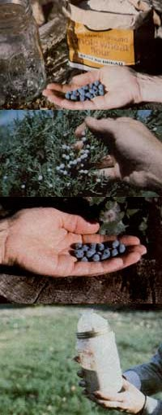

The fixin's for our sourdough starter include flour, water, a handful of yeast-covered berries, and a glass container... The powdery-white leavening coats the fruit of the juniper shrub and... the Oregon grape... Gases from the fermenting ""sponge"" expand in the jar's plastic cover.